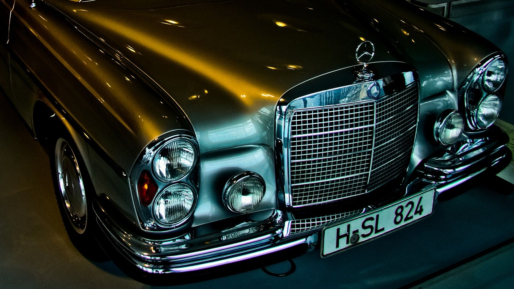

История
Познакомтесь со звездными часами истории автомобиля

Марка Mercedes-Benz имеет особые заслуги перед цивилизацией, поскольку именно наша компания поставила автомобиль на коммерческую службу. Первый грузовой автомобиль был построен компанией Daimler-Motoren-Gesellschaft, первый автобус – Benz & Cie. Эта же компания после Первой мировой войны выпустила первый грузовик с дизелем.
Уже более ста лет коммерческие автомобили Mercedes-Benz выполняют транспортные задачи на дорогах России. За это время стараниями поколений инженеров и техников в автомобиль были внесены тысячи улучшений, которые сделали Mercedes-Benz экономичнее, надежнее и дружелюбнее по отношению к окружающей среде. Но, может быть, самое главное в том, что мы зарекомендовали себя как надежный партнер.
Марка Mercedes-Benz имеет особые заслуги перед цивилизацией, поскольку именно наша компания поставила автомобиль на коммерческую службу. Первый грузовой автомобиль был построен компанией Daimler-Motoren-Gesellschaft, первый автобус – Benz & Cie. Эта же компания после Первой мировой войны выпустила первый грузовик с дизелем.
Уже более ста лет коммерческие автомобили Mercedes-Benz выполняют транспортные задачи на дорогах России. За это время стараниями поколений инженеров и техников в автомобиль были внесены тысячи улучшений, которые сделали Mercedes-Benz экономичнее, надежнее и дружелюбнее по отношению к окружающей среде. Но, может быть, самое главное в том, что мы зарекомендовали себя как надежный партнер.
Мы предлагаем вашему вниманию основные вехи российской истории коммерческих автомобилей марок Benz, Daimler и Mercedes-Benz.
Поставки грузовиков «Даймлер» фабрики «Автомобили и моторы Берлина» в Мариенфельде для русской армии. В 1902 г. фабрика была куплена фирмой «Даймлер»
Стенд Benz & Cie на первой московской автомобильной выставке
1 января по адресу Неглинный проезд, 15 А открылся московский филиал «Общества моторов Даймлер» (Daimler-Motoren-Gesellschaft)
Daimler-Motoren-Gesellschaft становится Поставщиком двора его Императорского Величества
31 января: Участие в параде пожарных автомобилей на Красной площади